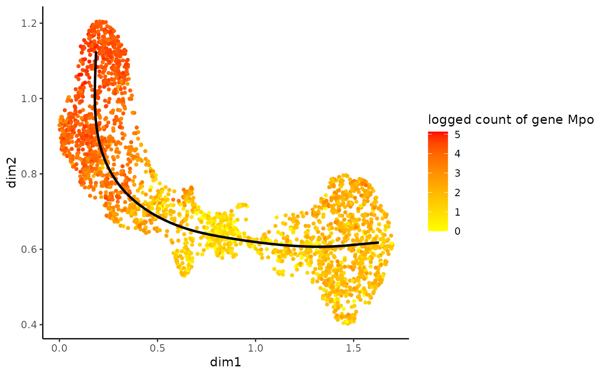

Plot the gene in reduced dimensional space.
plotGeneCount( curve, counts = NULL, gene = NULL, clusters = NULL, models = NULL, title = NULL )
| curve | A |
|---|---|
| counts | The count matrix, genes in rows and cells in columns. |
| gene | The name of gene for which you want to plot the count or the row
number of that gene in the count matrix. Alternatively, one can specify
the |
| clusters | The assignation of each cell to a cluster. Used to color the
plot. Either |
| models | The fitted GAMs, typically the output from
|
| title | Title for the plot. |
A ggplot object
If both gene and clusters arguments are supplied, the
plot will be colored according to gene count level.
#>data(crv, package="tradeSeq") data(countMatrix, package="tradeSeq") rd <- slingshot::reducedDim(crv) cl <- kmeans(rd, centers = 7)$cluster lin <- slingshot::getLineages(rd, clusterLabels = cl, start.clus = 4)#>#> Warning: the condition has length > 1 and only the first element will be usedcrv <- slingshot::getCurves(lin) counts <- as.matrix(countMatrix) gamList <- fitGAM(counts = counts, pseudotime = slingPseudotime(crv, na = FALSE), cellWeights = slingCurveWeights(crv)) plotGeneCount(crv, counts, gene = "Mpo")